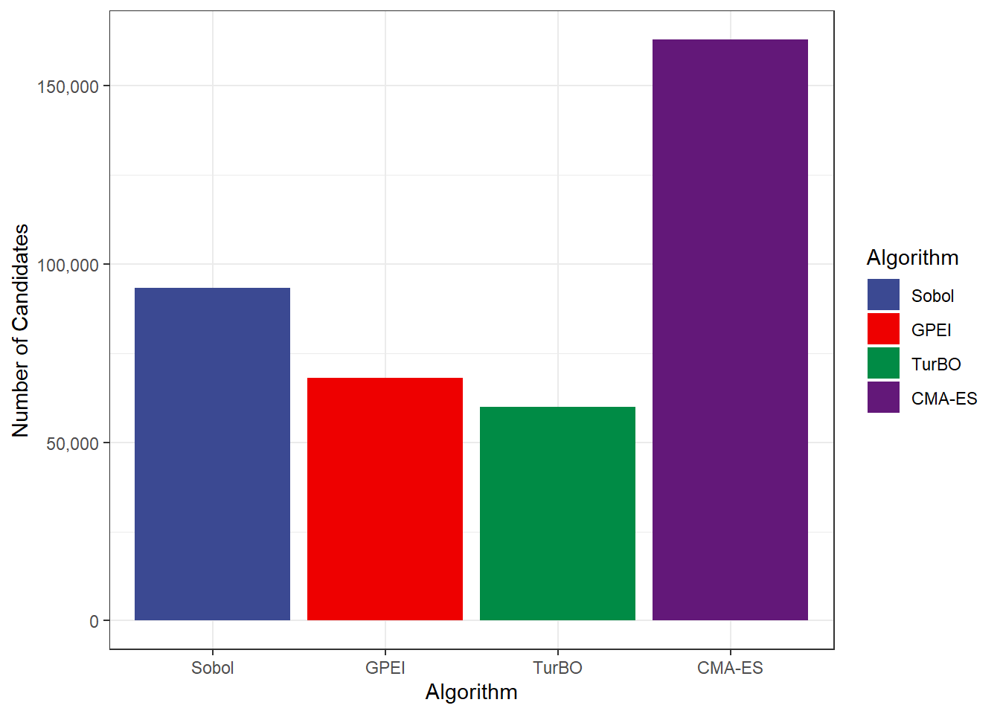

library(tidyverse)
library(ggsci)
experiments <- read_csv("data/experiments.csv")
algorithm_levels <- c("sobol", "gpei", "turbo", "cma-es", "saasbo")
algorithm_labels <- c("Sobol", "GPEI", "TurBO", "CMA-ES", "SAASBO")
experiments <-
experiments |>
mutate(bom_id = factor(bom_id),
replication = as.integer(replication),
budget = as_factor(budget),
candidate_id = as.integer(candidate_id),
num_trials = as.integer(num_trials),
num_candidates = as.integer(num_candidates),
algorithm = factor(algorithm, levels = algorithm_levels, labels = algorithm_labels)
)
experiments |>
count(algorithm, sort = TRUE)2 Transformations
This chapter contains the data transformations we performed before analyzing the data.
2.1 Data Type Conversion
Before we analyze the data, we need to convert some of the columns.
We will load the transformed data from an R-data source (RDS) file in the following chapters:
experiments |>
saveRDS("data/experiments.rds")2.2 Consistent Colors and Theming
Define a consistent color set for the display of the algorithm variable throughout the analysis:
# Consistent colors
algorithm_colors <- c(
"Sobol" = pal_aaas()(5)[1],
"GPEI" = pal_aaas()(5)[2],
"TurBO" = pal_aaas()(5)[3],
"CMA-ES" = pal_aaas()(5)[4],
"SAASBO" = pal_aaas()(5)[5]
)Define the globally used theme:
theme_simbo <- function (base_size = 12, base_family = "Roboto Condensed") {
half_line <- base_size/2
theme_bw()
}
theme_set(theme_simbo())Example:
Code
library(scales)
experiments |>
ggplot() +
aes(x = algorithm, fill = algorithm) +
geom_bar() +
scale_fill_manual(values = algorithm_colors) +
scale_y_continuous(labels = comma) +
labs(x = "Algorithm", y = "Number of Candidates", fill = "Algorithm")